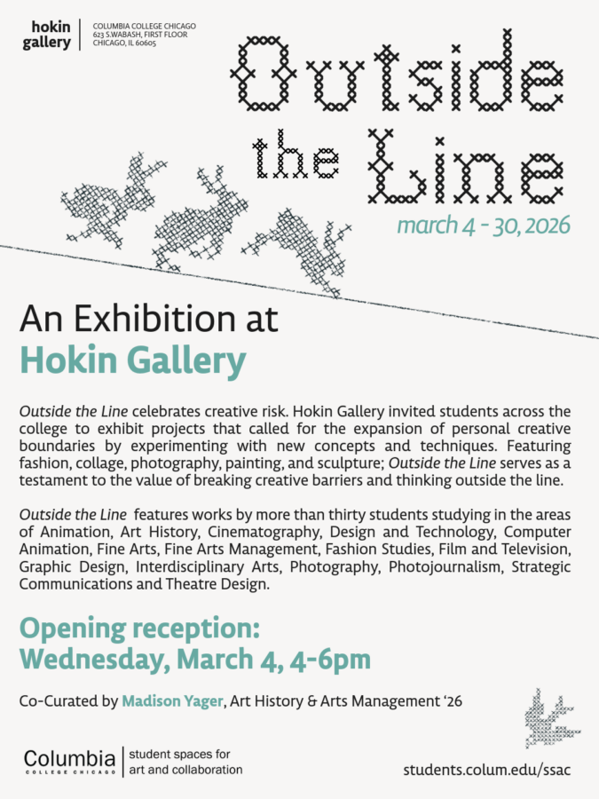

Outside the Line
March 4-30, 2026
Opening reception: Wednesday, March 4, 4-6p.m.
Outside the Line celebrates creative risk. Hokin Gallery invited students across the college to exhibit projects that called for the expansion of personal creative boundaries by experimenting with new concepts and techniques. Featuring fashion, collage, photography, painting, and sculpture; Outside the Line serves as a testament to the value of breaking creative barriers and thinking outside the line.
Outside the Line features works by more than thirty students studying in the areas of Animation, Art History, Cinemaphotography, Design and Technology, Computer Animation, Fine Arts, Fine Arts Management, Fashion Studies, Film and Television, Graphic Design, Interdisciplinary Arts, Photography, Photojournalism, Strategic Communications and Theatre Design.
Co-curated by Madison Yager, Art History & Arts Management ’26.
Participating artists: Andy Alcot, Michele d’Alessandro, Daniel Salas-Alvarez, Isaac Barnett, Logan Basil, Carley Brown, Writer Carter, Zachary Cramer, Jenna Davis, Alx Denise, Jocelyn Diaz, Caleb Earick, Laura Evans, Viola Everett, Tara Fuhtrakoon, Claire Gerald, Sprig Greene, Emma Jean Golden, Emily Honey, Phillip Jarzen, Riley Johnson, Michael Kowalkowski, Ana Lara, Huynh Vinh Duc Le, Hai Martinez, Kate McDonough, Vasileia McFadyen, Frida Mejia, Sierra Miller, Theo Miller, Samaya Norman, Mauricio Patino, Eliana Pinkert, Cristian Romero, Brooke Rose, Kennedy Staples, Melanie Thondike and Harlie Yarkovsky